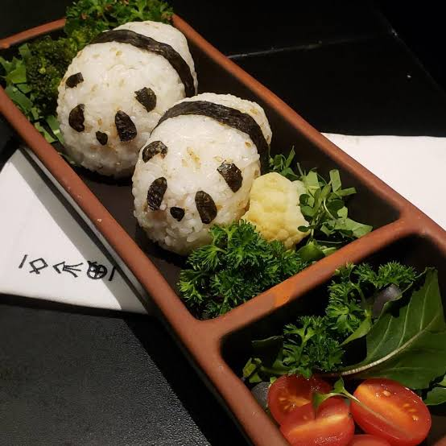

鮨SUSHI LUNA
Sushis, sashimis e pratos quentes preparados com ingredientes frescos e muito carinho. Cadastre-se para conhecer o nosso cardápio.

Peixes e insumos selecionados todos os dias.
Cada prato é montado com atenção aos detalhes.
Cadastre-se para acessar o cardápio completo.